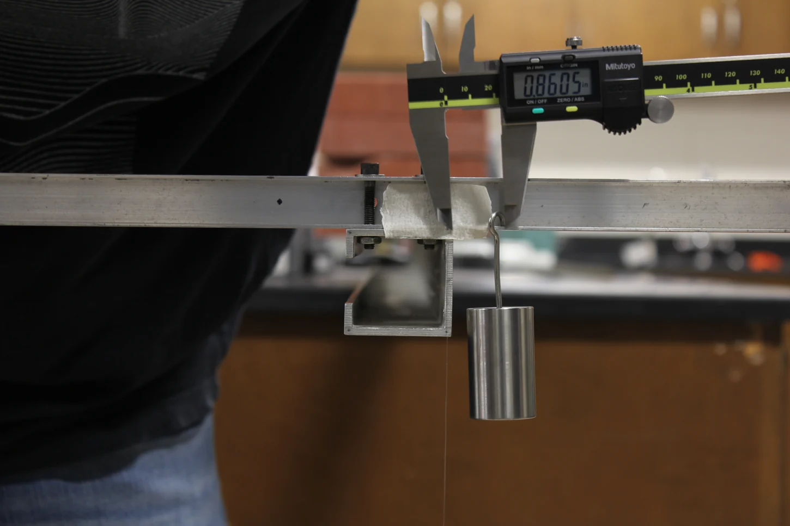
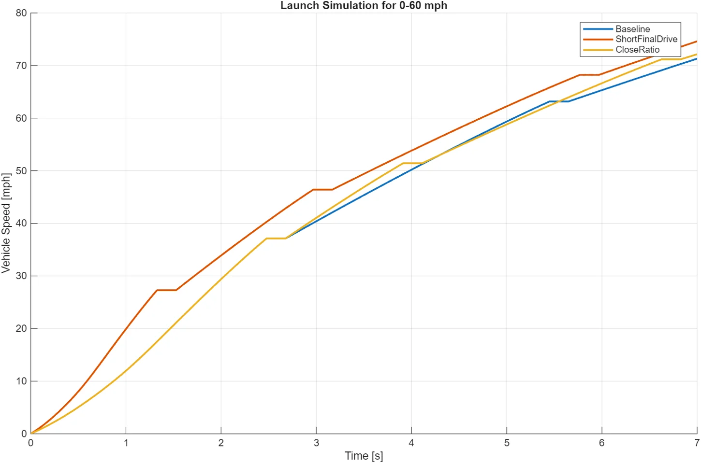

Kronos · Citation X supersonique
Comparaison de configurations supersoniques et intégration des données aérodynamiques, géométriques et massiques.
Diplômé en génie aérospatial avec une spécialisation secondaire en génie mécanique. Sélection de travaux en conception aéronautique, modélisation numérique, commande, systèmes mécaniques et validation expérimentale.
Laboratoire interactif de conception aéronautique — une application web associant une géométrie 3D modifiable à des analyses d’ingénierie de premier ordre, des études de compromis et un apprentissage pratique.
Aperçu du produit · Estimations pédagogiques, non destinées à la certification.
Explorez les projets par discipline ou consultez-les tous.
Comparaison de configurations supersoniques et intégration des données aérodynamiques, géométriques et massiques.

Évaluation conceptuelle d’un véhicule spatial réutilisable à corps portant, de ses commandes et de ses propriétés massiques.

Modélisation du vol d’un corps rigide avec représentation de l’attitude par quaternions.

Comparaison de la torsion mesurée d’un profilé en aluminium à parois minces avec les prévisions analytiques.

Comparaison des rapports de transmission, de l’effort de traction, des performances au démarrage et du rendement en croisière.

Traitement des données de pression d’un profil et étude des efforts aérodynamiques et de l’écoulement.

Conception de pièces et d’assemblages, réalisation de plans et études cinématiques.

Sélection de géométries de profils en losange sous contraintes de portance et de moment de tangage.
Je suis diplômé en génie aérospatial et basé à Arlington, au Texas. J’ai obtenu un Bachelor of Science en génie aérospatial, avec une spécialisation secondaire en génie mécanique, à l’Université du Texas à Arlington, après un Associate of Science avec mention à Dallas College.
J’aime travailler à l’interface des systèmes physiques et des outils numériques : comprendre leur fonctionnement, construire un modèle, vérifier les hypothèses et transformer les résultats en décisions concrètes. En tant qu’ingénieur en chef adjoint de deux équipes de projets de fin d’études, j’ai appris à coordonner plusieurs disciplines tout en pilotant les travaux de stabilité et de commande.
L’animation d’ateliers d’algèbre linéaire auprès d’autres étudiants a également façonné mon approche de l’ingénierie : décomposer les problèmes complexes, expliquer les phénomènes physiques et vérifier la cohérence des résultats. AeroLab réunit mon intérêt pour l’ingénierie, le développement logiciel et la pédagogie dans un produit indépendant.
Les résultats distinguent les estimations conceptuelles, les mesures expérimentales et les vérifications restant à effectuer.
Pour des opportunités professionnelles, des questions sur mes projets ou une démonstration privée d’AeroLab.